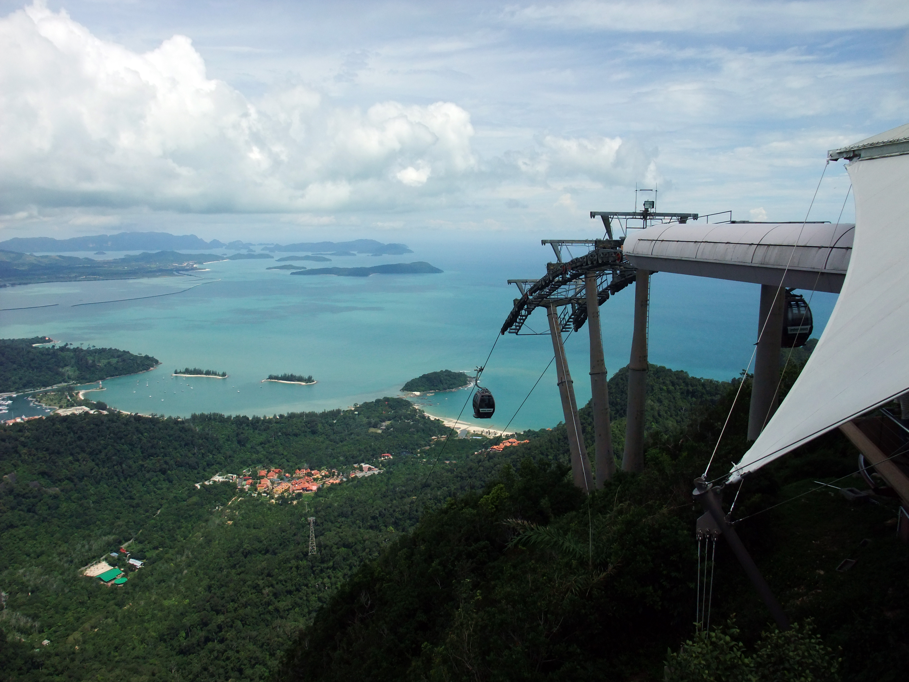

Iconic Landmark 25 mins drive
Oriental Village, Teluk Burau (19 km)
Langkawi SkyCab (Cable Car)
Soar 708 meters above sea level on one of the steepest cable car rides in the world. As you glide above 550-million-year-old Machinchang rock formations and primary rainforest, take in sweeping 360-degree vistas of the Andaman Sea, cascading waterfalls, and distant Thai islands.
Host Tip: Book standard or glass-bottom gondolas online ahead of time to skip the queues. You can also visit the 3D Art Museum and SkyDome at the Oriental Village base station.
Combined ticket with SkyBridge available
Google Maps